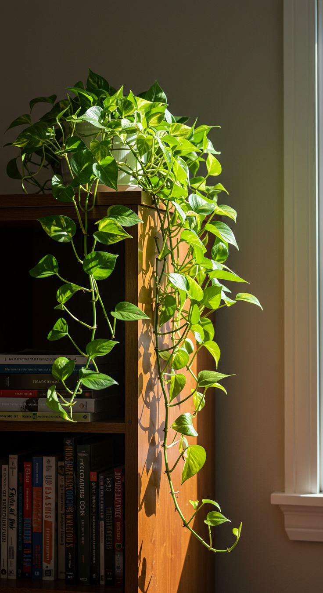
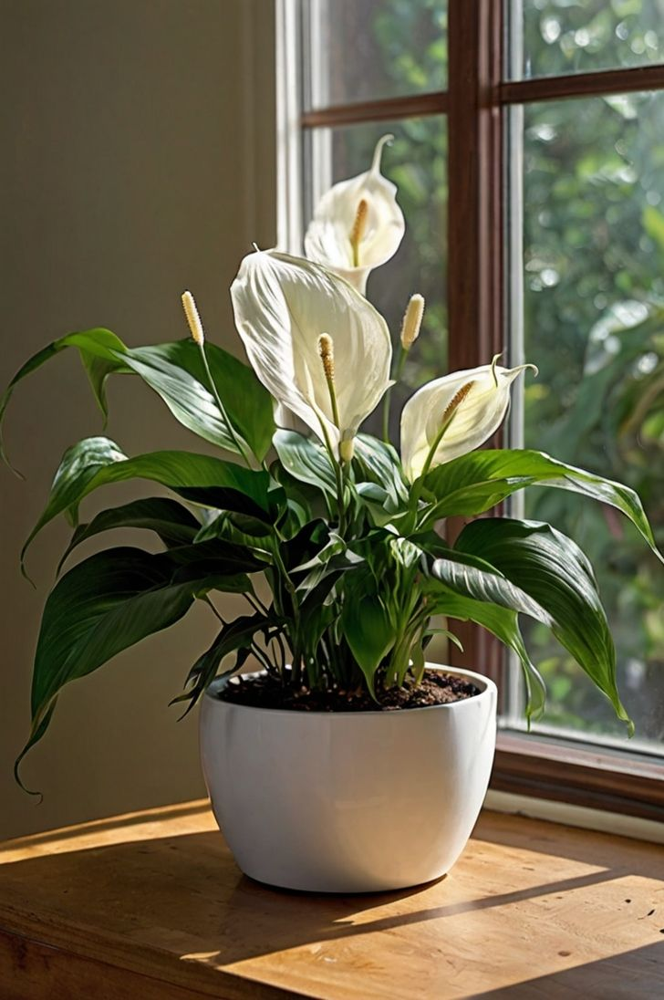

Featured Plants
Snake Plant (Sansevieria trifasciata)
- Care: Tolerates low light and infrequent watering.
- Benefit: Filters indoor toxins.
- Fun Fact: Releases oxygen at night.
- Tip: Water only when soil is dry.

Pothos (Epipremnum aureum)
- Care: Thrives in indirect light.
- Benefit: Beginner friendly.
- Fun Fact: Long trailing vines.
- Tip: Trim to prevent legginess.

Peace Lily (Spathiphyllum)
- Care: Medium to low light.
- Benefit: Improves air quality.
- Fun Fact: Droops when thirsty.
- Tip: Keep away from pets.

Aloe Vera
- Care: Bright indirect light.
- Benefit: Soothes skin irritation.
- Fun Fact: Used for thousands of years.
- Tip: Use well-draining soil.